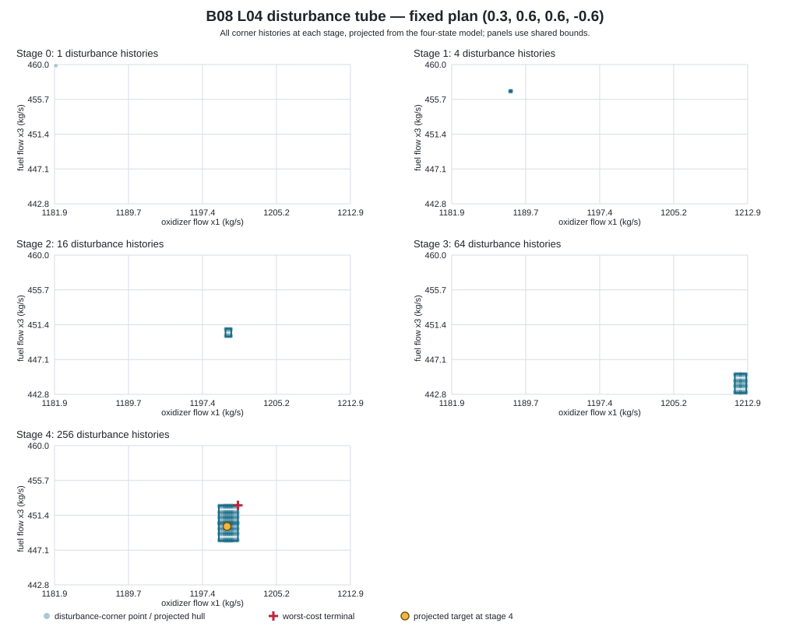

B08 displayed-data robust minimax MIQCP
Article-derived solve of the four-step L04 printed linear data. The original unrounded arrays and historical generator are unavailable; this is not a historical reproduction.
Model
Four-state model x1'=x1+20.073u+w1; x2'=x2-25x1; x3'=x3-10.473u-w2; x4'=x4-25x3, initial state [1182.074, 119560.0, 459.832, 45260.0], target [1200.0, 0.0, 450.0, 0.0], ordered action catalogue (0.6, 0.3, 0.0, -0.3, -0.6), and 256 disturbance-corner histories. One fixed action sequence is shared across every history. The objective is the worst terminal Euclidean error; the finite model uses one-hot selectors and one quadratic epigraph constraint per disturbance corner.
The continuous relaxation replaces the finite action catalogue with its convex hull, the interval [-0.6, 0.6]. Its result is a lower bound on the finite optimum; rounding its controls is not a catalogue-feasible plan.
Results
| Method | Squared terminal cost | Terminal norm | Evidence |
|---|---|---|---|
| Finite-action MIQCP | 4509.203228280342 | 67.150601101405 | optimal; exact enumeration confirms the returned plan |
| Continuous-control QCP | 4492.233805598401 | 67.024128532928 | optimal; numerical global lower bound |
Exact displayed-data enumeration gives squared cost 112730080707/25000000 and norm 67.150601101404892785077587907567047, with three tied action-index plans [[0, 0, 3, 2], [0, 1, 1, 3], [1, 0, 0, 4]]. SCIP returned plan (0.3, 0.6, 0.6, -0.6), one of those exact ties. The article-reported norm 67.12 does not match the rounded displayed-data model.
The norm interval [67.024128532928, 67.150601101405] is a lower/upper bound comparison. It is not an equal-problem speed ranking. Solver status and bounds use binary64 tolerances, not validated arithmetic.

Reproduce and inspect
Optional report-only dependency: PySCIPOpt 6.3.0 (MIT) with bundled SCIP 10.0 (Apache-2.0). The PyPI wheels support Linux x86-64, Windows x86-64 and macOS x86-64/Apple Silicon. No CSL library dependency or installation surface is added.
python3 -m venv .venv
.venv/bin/python -m pip install pyscipopt==6.3.0
.venv/bin/python scripts/reports/mpc03/b08_miqcp.py
python3 docs/research/tools/check_b08_displayed_exact.py --verify-record docs/research/evidence/b08-displayed-exact.jsonLimits
The source paper's unrounded arrays and complete generator are unavailable. The rational oracle treats printed decimals as exact; SCIP receives binary64 coefficients. This case is unconstrained, linear, four-step and open-loop. It does not establish nonlinear-plant reproduction or validated arithmetic. Each solver timing is one exploratory capture and no runtime claim is made.